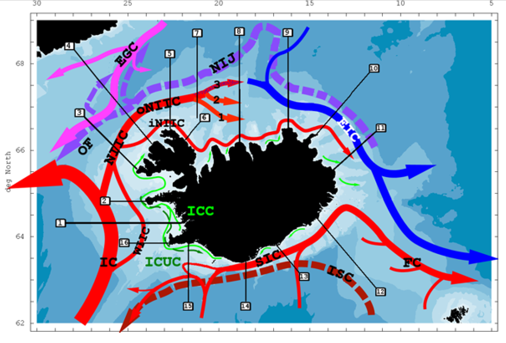
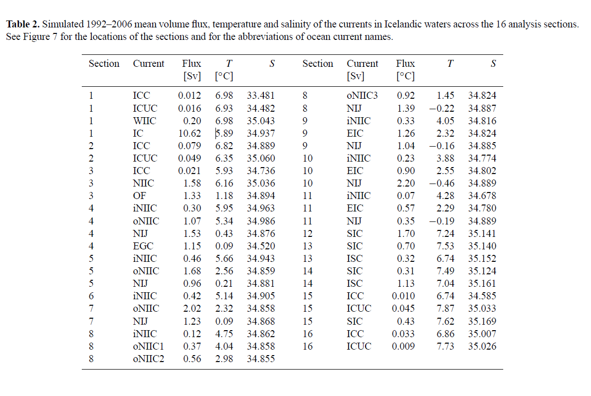
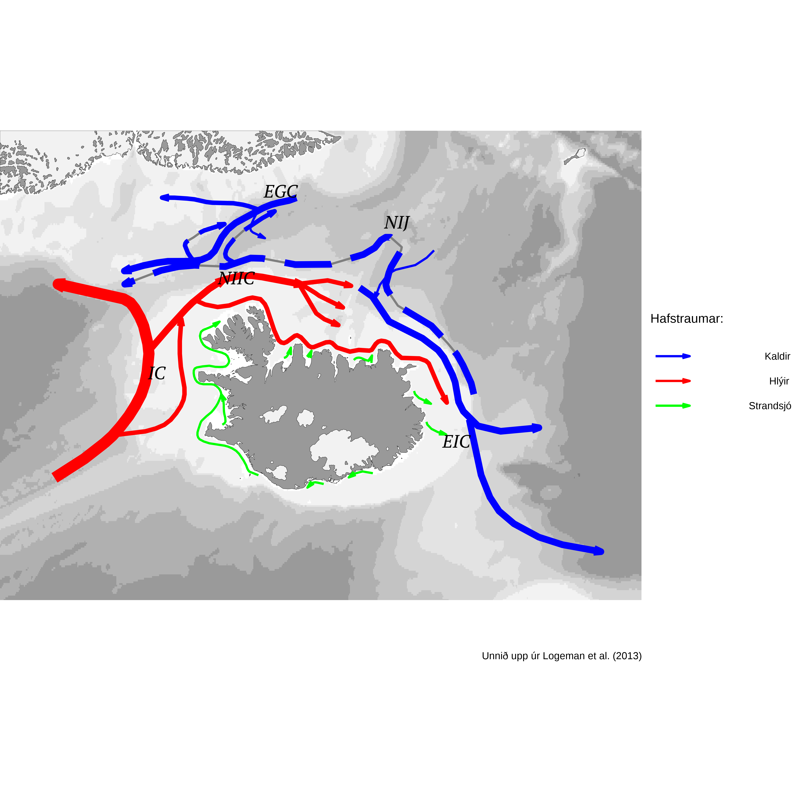

Kort af hafstraumum
Hér er hlekkur á Github þar sem má sækja öll skjölin sem þarf til að endurgera myndina á botni þessar síðu.
Kortið á mynd 1 hér að neðan er birt í grein haffræðingsins Kai Logemann. Kai starfaði um árabil hérlendis og gerði sjávarfallalíkan sem hefur nýst til þess að spá fyrir um rek agna í sjó kringum landið. Þetta kort er nákvæmasta straumakort af hafinu kringum Ísland sem ég veit um og þess vegna langaði mig til þess að endurgera það og um leið gera gögnin sem það byggir á aðgengilegri. Fyrst þarf að sækja gögnin.

Kort af hafstraumum við Ísland frá Kai Logemann.
Taflan yfir styrk straumanna er sótt í greinina hans The circulation of Icelandic waters – a modelling study með pakkanum tabulizer því ekki viljum við slá inn tölur og skapa hættu á innsláttarvillum.

Skjáskot úr greininni af töflunni sem sýnir styrk og hitastig hafstrauma við Ísland.
Byrjum á að lesa inn R-pakkana. Ef þeir eru ekki allir á CRAN þá er hægt að sækja þá á github-síðu pakkasmiðanna. Þetta á t.d. við um tabulizer pakkann þegar þetta er skrifað.
# Hér eru pakkarnir sem notaðir eru í þessu dæmi
Rpakkar <- c("tidyverse", "ggOceanMaps", "tabulizer", "plyr", "sysfonts", "showtext")
pacman::p_load(Rpakkar, character.only = TRUE)
Svo er það að sækja straumstyrkinn og heiti straumanna úr töflunni í greininni og færa yfir á þægilegt form:
f <- file.path("Logemann et al. - 2013 - The circulation of Icelandic waters – a modelling study.pdf")
tafla <- tabulizer::extract_tables(f, pages = 9)
dfs <- do.call(rbind,tafla) %>%
as.data.frame() %>%
janitor::row_to_names(row_number = 1)
# Taflan í greininni (mynd 2) er höfð á tveggja dálka formi, svo hún sé breiðari því þá er greinin læsilegri. Svona lagað skapar örlítil vandamál. Tveir "data frames" gerðir til að leysa það.
one <- dfs[,1:5 ]
two <- dfs[,6:10 ]
# Þeir eru svo bundnir saman en dálkurinn T er færður inn handvirkt því mínusmerkið var eitthvað einkennilegt sem gerði mér ekki kleift að breyta þessu úr "character" yfir í "double" eða frá texta yfir í tölur.
dfs <- bind_rows(one, two) %>%
slice(-c(1, 24, 46)) %>%
readr::type_convert() %>%
mutate(T=as.double(c("6.98","6.93","6.98","5.89","6.82","6.35","5.93","6.16","1.18","5.95","5.34","0.43","0.09","5.66","2.56","0.21","5.14","2.32","0.09","4.75","4.04","2.98","1.45","-0.22","4.05","2.32","-0.16","3.88","2.55","-0.46","4.28","2.29","-0.19","7.24","7.53","6.74","7.49","7.04","6.74","7.87","7.62","6.86","7.73"))) %>%
ddply(.(Current),summarize,T=mean(T))
Staðsetning straumanna er ekki gefin með GPS-punktum í greininni og leysti ég það vandamál frekar gróflega í QGIS. Ég get því miður ekki munað nákvæmlega hvernig ég gerði það en QGIS býður ekki upp á „reproducible workflow“ með sama máta og R.
Grófleg lýsing:
- Mynd 1 hér að ofan hnitsett með því að skella henni yfir kort af Íslandi. Þetta er gert með viðbótinni (plugin) Freehand raster georeferencer og undirliggjandi kortið getur t.d. verið frá viðbótinni QuickMapServices. Nákvæmnin þarf ekki að vera sérstaklega mikil en maður vandar sig bara eins og hægt er.
- Þegar línurnar hafa verið teiknaðar inn á myndina þá þarf að skrifa þær út (export) sem .shp skrá og nota svo tólið “Extract vertices” til þess að breyta línunum í punkta. Punktarnir eru svo vistaðir sem .csv og þá er hægt að nota þá með eftirfarandi hætti í R.
sam <- readr::read_csv("currents.csv") %>%
left_join(dfs, by = c("Current"="Current"))
sam$type <- recode_factor(as.factor(sam$type), "local"= "Strandsjór", "Atlantic" = "Hlýir", "Arctic"= "Kaldir")
linur <- sf::read_sf("nokkrarlinur.shp") %>%
sf::as_Spatial() %>%
fortify()
linur2 <- transform_coord(linur)
linur <- linur %>%
mutate(styrkur = sam$styrkur,
T = sam$T,
type = sam$type,
flow = sam$flow,
current = sam$Current,
long = linur2[,1],
lat = linur2[,2])
Nú þegar hnitsettar línur með nöfn, upplýsingar um stærð, hitastig (heitt/kalt) og dýpi liggja fyrir er hægt teikna þær inn á kort með R-pakkanum ggOceanMaps. Það mætti gera á snyrtilegri máta en þar sem mig langaði að auðkenna neðansjávarstrauma með punktalínum en það er straumurinn NIJ (North Icelandic Jet) er gert geom_path fyrir hverja straumgerð.
linurU <- linur %>% filter(flow == "u", type != "Coastal")
linurY <- linur %>% filter(flow != "u", type != "Coastal")
linurCU <- linur %>% filter(flow == "u", type == "Coastal")
linurCY <- linur %>% filter(flow != "u", type == "Coastal")
lim <- c(-31,-4,62.57 , 68.72)
st=.6
p <- basemap(limits = lim, bathymetry = T, glaciers = T, legends = T, base_size = 2, bathy.style = "poly_greys",land.size = .06, gla.size = .06) +
geom_path(data = linurU,
aes(x = long, y = lat, group = id, color = "black"),
size = st,
linetype = 1,
arrow = arrow(type = "open", angle = 15, ends = "last", length = unit(0.3, "lines"))) +
geom_path(data = linurU,
aes(x = long, y = lat, group = id, color = type),
size = linurU$styrkur*st,
linetype = 11,
arrow = arrow(type = "open", angle = 15, ends = "last", length = unit(0.3, "lines"))) +
geom_path(data = linurY,
aes(x = long, y = lat, group = id, color = type),
size = linurY$styrkur*st,
linetype = 1,
arrow = arrow(type = "open", angle = 15, ends = "last", length = unit(0.3, "lines"))) +
geom_path(data = linurCY,
aes(x = long, y = lat, group = id, color = type),
size = st,
linetype = 1,
arrow = arrow(type = "open", angle = 15, ends = "last", length = unit(0.1, "lines")))
Einfaldast fannst mér að gera .shp-skrá fyrir heiti straumanna í QGIS með því að gera nýtt „scratch-layer“ og finna sæmilega staðstningu fyrir heitin með músinni. Það er auðveldara en að staðsetja heitin með ggplot.
sysfonts::font_add_google("PT Serif", "PT Serif")
showtext::showtext_auto()
punktar <- sf::read_sf("heitiIsland.shp")
p2 <- p + scale_color_manual(name = "Hafstraumar:",
values = c( "Kaldir" = "blue","Hlýir" = "red","Strandsjór" = "green"),
guide = guide_legend(order = 3, override.aes = list(fill = NA))) +
geom_text_repel( data = heitipunktar, aes(geometry = geometry, label = heiti, family="PT Serif", fontface="italic"),
colour = "black",
size = 30,
show.legend = FALSE,
stat = "sf_coordinates")
p3 <- p2 + labs(caption = "Unnið upp úr Logeman et al. (2013)") +
theme_void() + theme_void(base_size = 60) +theme(legend.key.size = unit(.5, "cm"), legend.key.width = unit(.86, "cm"), legend.text.align = unit(.4, "cm"), legend.spacing.y = unit(0.4, "cm"))
ggsave("straumar.png", p3, device = "png", height=16, width=16, units = "cm", dpi=800, bg = "white")

Hafstraumar um Ísland. Gert með ggOceanMaps í R.